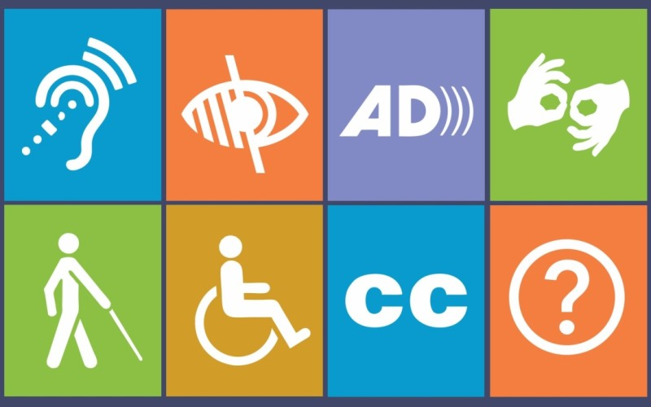

My name is Kellie, and this is my capstone project. I coded this entire website by myself using HTML, CSS, and JavaScript to show how websites can be accessible. Oftentimes, when people think of accessibility, they think of physical infrastructure such as ramps and parking spots. However, accessibility in the digital world is often overlooked, especially by people like me who design and build websites. My goal with this website is to show that it’s quite easy to adapt a website to make sure that no one is excluded. If you want to learn more about disability, you can click here to read my capstone paper on disability. Thank you for visiting my website!
